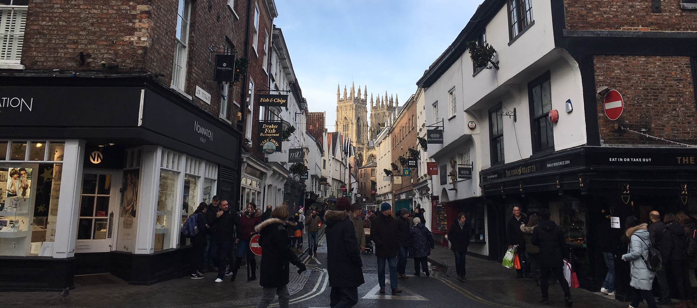

York
York, England - December 30, 2017
On Wednesday we spent a day in York, England. York is a walled city that was first formed by the ancient Romans as Eboracum, then Anglo-Saxons took over the city for a few hundred years before the Vikings arrived and renamed the city as Jorvik. After the Vikings left in the early 11th century, the Dark Ages began and York was the center of plague and royalty through the 1600s.
Our first stop was the York Minster, the largest medieval Gothic cathedral in Northern Europe. We took a guided tour with a little old lady, and she told us about the history of the famously old and irreplaceable stained glass windows in the cathedral. The windows were removed during WWII to preserve them, and the cathedral is constantly working on keeping the windows from falling into disrepair. The history of the Minster dates all the way back to the Roman times, 2,000 years ago. Roman barracks were discovered beneath the current Minster in the 1960s/70s, and an older, smaller Minster was built up 800 years ago to the current building today. It was interesting to see how the Plantagenet and Tudor influence affected the architecture and design of the Minster. There were multiple stained glass windows with the white rose of York and the red rose of Tudor and the cathedral produced a line of sculptures that depicted the true kings of England, ending with Henry VI (the Mad King) to show Henry VII’s viable claim to the throne (even though his claim wasn’t very strong). It was interesting to see how the Minster affected everyday life along with politics.
Our next stop was the Shambles, or a road that looked very similar to Diagon Alley in Harry Potter. Apparently the road was where butchers would lay out meat for purchase, and the buildings tilted inwards so neighbors across the street could basically shake each others hands from their windows.
After navigating around the city’s winding alleyways, we found the Jorvik Viking Centre. The exhibit featured a ride that had lifelike mannequins and life-size dioramas depicting Viking life in York. At the end of the ride, we got to see real archaeological artifacts like tools and skeletons that were found in the Viking site. One of my favorite pieces of archaeological evidence was a large poop, dubbed the Lloyd Bank’s first deposit (since the poop was discovered near the bank). It was neat to see all the evidence that survived in York’s anaerobic conditions after taking an archaeology class this past semester.
Even though we were pretty tired, we headed to the National railway museum across town. It was free, like most museums in the UK, and featured old trains as well as royal carriages from past royalty. I enjoyed climbing on the trains and experiencing what it felt like to travel on trains like that. Queen Victoria’s carriage had just been renovated and, although we couldn’t board her train, it was fun to see how the interior would have looked like back in the day.
After a quick nap and a warm, pub dinner, we headed out for our last stop in York - a Mad Alice walking tour. Mad Alice took us through the gruesome and bloody history of York, and showed us some of the most well-known haunted sites in the city. I especially remember how a guy working on a house renovation encountered a whole battalion of Roman soldier ghosts (beneath the house was an old Roman road) and that a particular house near the York Minster was the birthplace of Guy Fawkes, who changed from Protestantism to Catholicism after a woman from the Shambles was martyred for her catholic faith. While we were standing at the York Minster, I noticed a shadow move in front of the lights that lit the walls of the Minster. At first I thought it was one of the pedestrians walking in front of a street lamp, but the light was basically right beside the building, so whoever had passed in front of the light wouldn’t have made a shadow, rather I would have seen their actual body. So, there is a strong possibility that, while Mad Alice was describing the ghosts in the area, I may have seen a ghost myself.
York was a great historical town to visit. I enjoyed learning more about York’s relationship with English royalty and the Roman and Viking influences that shaped the city.
Cheers!
- Caileigh Marshall